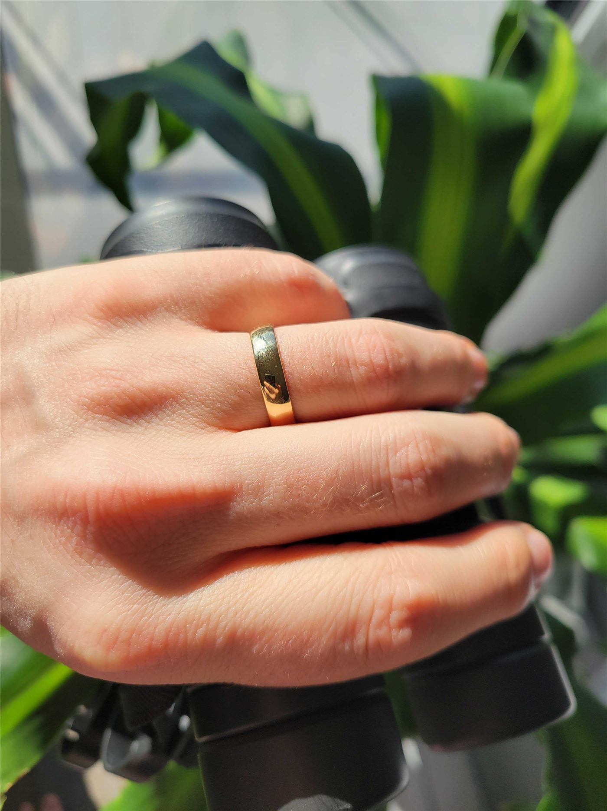

화교 사회 겹경사… 손씨·유씨 두 가문 혼례 소식
한성화교협회가 화교 사회의 두 혼례 소식을 알렸다. 손위쉬(孫毓緖) 전 회장의 영애 위안메이(元美) 양이 유상태 선생의 영식 양성 군과 10월 12일 성남 엔씨소프트 R&D센터 컨벤션홀에서, 류창룽(劉昌隆) 선생의 영식 신위(新禹) 군이 위안주융(元柱永) 선생의 영애 둬아이(多愛) 양과 11월 9일 인천 아시아드 웨딩컨벤션에서 백년가약을 맺는다.
이문창 기자 · 2026.07.22
橋화인소식

한성화교협회 공고에 따르면 두 혼례 모두 협회를 통해 축하 인사를 전할 수 있다.
광고 문의 · 300×250화교 사회의 혼례는 세대와 가문을 잇는 공동체 행사로, 협회가 경조사를 함께 알리는 전통이 이어지고 있다.
가을 혼례 시즌을 맞아 협회에는 경조사 공고가 잇따르고 있다.
젊은 세대의 혼례가 화교 커뮤니티의 활력을 보여 주는 지표라는 덕담도 나온다.
본지는 두 가문의 앞날에 축복이 가득하기를 기원한다.
출처·참고 (사실 확인용 — 본문은 직접 재작성)
· 한성화교협회 공고
· 한성화교협회 공고